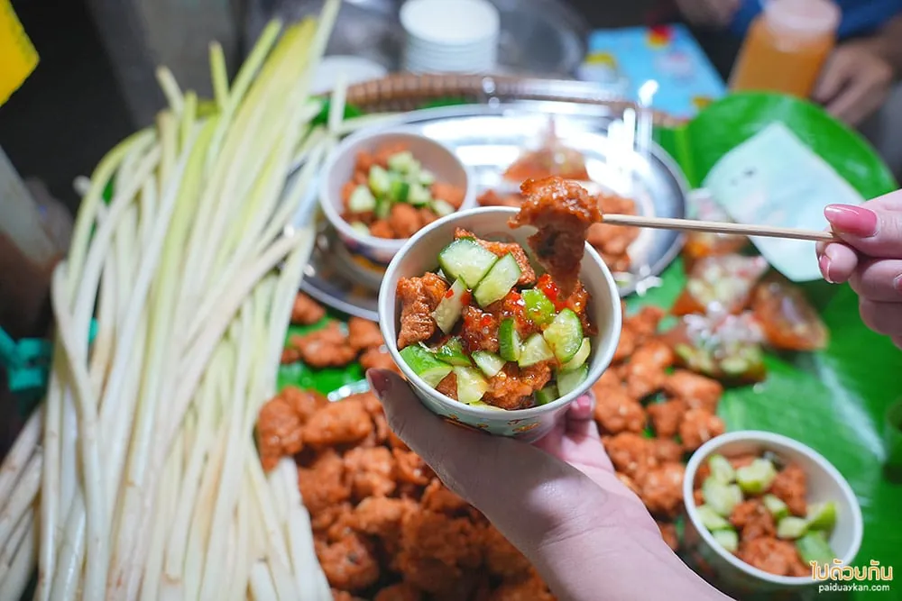

ของคาว
ทอดมันหน่อกะลา
ถ้าจะกินอะไรสักอย่างที่กินที่อื่นไม่ได้จริง ๆ อันนี้คืออันนั้น เพราะวัตถุดิบหลักของมันขึ้นอยู่บนเกาะนี้เป็นหลัก
สรุปให้ก่อน
- ราคา
- หลักสิบต่อชุดขายเป็นชิ้นหรือเป็นชุด
- เวลาเปิด
- ช่วงกลางวันถึงบ่ายแก่ของหมดก่อนปิดได้
- พิกัด
- ร้านในตลาดริมน้ำเดินจากท่าเรือไม่ถึง 5 นาที
- ใช้เวลา
- ซื้อแล้วเดินกินได้เลยเที่ยงวันหยุดต่อคิวนาน
หน่อกะลาคือหน่ออ่อนของต้นกะลา พืชตระกูลปาล์มที่ขึ้นได้ดีในดินชื้นริมน้ำแบบที่เกาะเกร็ดมี พอเป็นพืชที่ผูกกับพื้นที่ขนาดนี้ มันเลยกลายเป็นของกินประจำถิ่นไปโดยปริยาย
รสชาติเป็นยังไง
เนื้อหน่อกะลาสับละเอียดผสมกับเครื่องแกงและเนื้อปลา แล้วทอดจนผิวกรอบ กัดเข้าไปจะได้ความกรอบจากผิวก่อน ตามด้วยเนื้อในที่นุ่มและมีความหนึบเล็กน้อยจากตัวหน่อ รสออกไปทางเครื่องแกงมากกว่าเผ็ดจัด
ปกติเสิร์ฟมาพร้อมน้ำจิ้มอาจาดที่มีแตงกวากับหอมแดง ช่วยตัดความมันของของทอดได้พอดี

กินยังไงให้อร่อยที่สุด
- กินตอนเพิ่งทอดเสร็จ ทิ้งไว้นานผิวจะนิ่มและเสียความกรอบ
- สั่งชุดเล็กก่อนถ้ายังไม่เคยกิน จะได้เหลือท้องไว้กินอย่างอื่น
- ถ้าจะซื้อกลับ บอกร้านว่าเอากลับ เขาจะแยกน้ำจิ้มให้
อย่าซื้อเยอะในร้านแรก
หลายร้านในตลาดทำขายเหมือนกันแต่รสไม่เหมือนกัน ซื้อร้านละนิดแล้วเทียบสนุกกว่าซื้อร้านเดียวจนอิ่ม
ข้อมูลชุดนี้ยังเป็นตัวอย่าง ราคาและเวลาต้องไปเช็กของจริงที่เกาะเกร็ดก่อนเผยแพร่